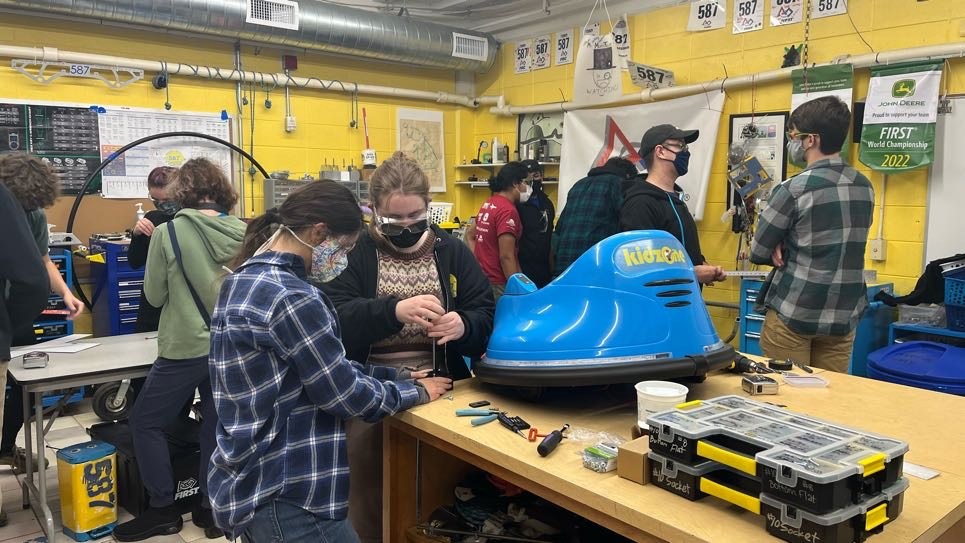

Highlights
CAPSTONE PROJECT
As someone passionate for challenges, STEM, and helping others, I eagerly took on the difficult task of developing a communication system that would enable paralyzed individuals to communicate more efficiently.
Project Start Date : 01/24
Project Progress : In Progress
Project Description : My project's goal is similar to speech neuroprosthesis, aim to translate a user's thoughts into speech. However, traditional neuroprosthesis devices require invasive surgery to implant the device directly onto the user's brain, which poses significant risks and potential health hazards, including death. This is particularly problematic for paralyzed patients who may not be able to consent to such a procedure. In response to this issue, my project aims to develop a non-invasive communication EEG headset that allows patients to fulfill their basic needs and even consent to neuroprosthetic implants if they wish. In addition to the health benefits, my project would also offer a more financially efficient method for paralyzed individuals to communicate. In addition to the health benefits, my project would also offer a more financially efficient method of communication in comparasion with the high costs of surgical procedures.
Tasks:
- In progress - Brainstorm/Research.
- Completed - Reach out to companies/experts to gather information.
- In progress - Obtain EEG headset.
- In Progress - Obtain other circutry.
- Not completed - Read EEG raw data through headset.
- Not completed - Filter data into usable information.
- Not completed - Make speech functions
- Not completed - Call speech functions based on EEG filtered data.
- Not completed - Test, experiment, and improve project.
- Not Completed - Present final project.
ROBOTICS
As the programming captain of the robotics team 587, The Hedgehogs, I was responsible with programming the robot, teaching students how to code, and leading side projects.
Picture info: Our robot from the 2022 season!
Along with my programming captain tasks, my enthusiastic and charismatic personality led to my selection as the team mascot, allowing me to proudly wear the Hedgehog costume and represent our team's spirit.
To learn more about the FRC team 587, check out CBS 17 Tech Tuesday Story "Meet Team 587, The Hedgehogs" where Timothy Mitchell and I discuss our team's goal and the significance of being part of FRC.
Picture with Slice from team FRC 8738 at WORLDS(international robotics)!
INTERNSHIP
As part of my involvement in my school's Engineering and Design Academy program, I was required to complete an internship during my high school career. I chose to pursue a civil engineering internship with the City of Mebane and AWCK.

Initially, my role as an intern was to shadow the engineers and architects working on various city projects. However, as I gained more knowledge and demonstrated my problem-solving abilities, Franz Holt, Mebane's city engineer, entrusted me with designing water and sewage systems for Mebane's undeveloped areas. In addition to this, I was also given the responsibility of reviewing various technical project design plans. This experience provided me with the opportunity to develop my technical skills and work on meaningful city projects, under the guidance of experienced professionals.
SWERVE
Since entering my school's robotics team, I have been heavily focused on programming, but I am also extremely curious about other areas of engineering, including 3D design, part assembly, and electrical wiring. In order to expand my knowledge and skills in these areas, I took on a personal side project during the fall of 2022: build a fully functional swerve drive that was original and practical.
Despite containing a limited budget and resources, I was determined to build a functional and original swerve drive. To achieve this, I had to improvise and create many of the necessary parts (6" ball bearings, bevel gears, shaft holders) using cheaper materials like PLA or ABS. But even with these challenges, I was still able to construct a fully functional and original swerve drive.
While it is true that my swerve drive design has many drawbacks compared to existing models, I still got to learn and experience a lot with project design and electrical hardware. The process of building the swerve drive allowed me to learn new techniques and approaches when facing an obstacle, as well as develop my problem-solving skills in a hands-on setting. Above all, the experience of getting my hands dirty with something unfamiliar was fun and rewarding!
GoBabyGo
As the programming captain of the FRC team 587, I had the privilege of leading various side projects, one of which was the GoBabyGo. The GoBabyGo project was dedicated to creating customized mobility devices for disabled elementary school students, with the aim of improving their independence through their mobility. Throughout this project, I was responsible for overseeing this project, including coordinating with other team members, and ensuring the overall success of the project. As a team, we worked diligently to design and build these devices, paying close attention to the unique needs of the children. During this project, I gained valuable leadership experience and had the satisfaction of knowing that our efforts were having a positive impact on the lives of others.
ELDER BROTHER
As the older brother of the Lopes family, it was my duty to look after my younger sibling Kev (4-years-old) when our parents were occupied. Having always yearned for a younger brother, assuming the role of an elder sibling has been one of the most fulfilling experiences for me. Without fail, Kevin's presence always brightens up my day.
Yes, that is me in a Patrick costume.